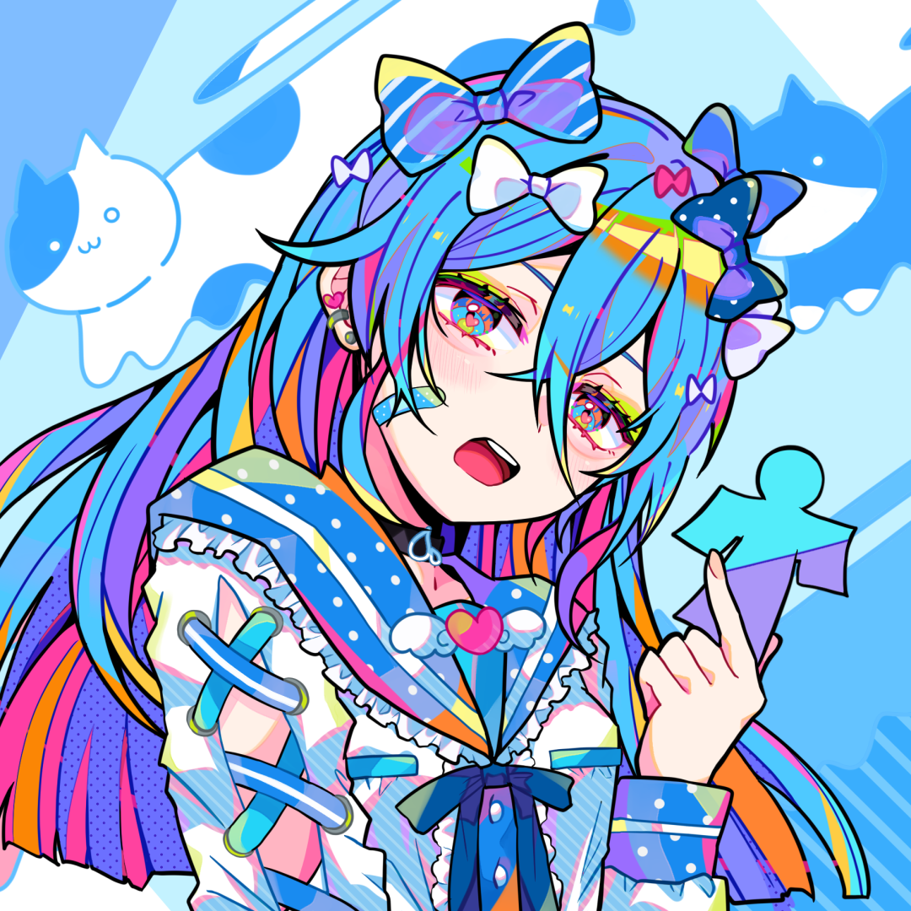

AIで、人と人をつなぐ。
AIで「楽」ではなく
「楽しい」を考える
仕事を「楽」にすることが、私たちの目的ではありません。人と人が本気で向き合える「楽しい」現場を共に創る。AIプロダクト開発と現場のAI活用支援を通じて、そんな舞台を創り上げます。
SCROLL
仕事を「楽」にすることが、私たちの目的ではありません。人と人が本気で向き合える「楽しい」現場を共に創る。AIプロダクト開発と現場のAI活用支援を通じて、そんな舞台を創り上げます。
繰り返しの作業をAIに任せれば、業務はぐっと「楽」になります。そこから生まれた時間で、人はもっと多くのことに本気で向き合えるはずです。
本気で打ち込みたい仕事、家族との食卓、仲間との一杯。ひとつひとつに向き合えることが、新しい価値を生んでいく。それが私たちの考える「楽しい」であり、つくり続けたい舞台です。
株式会社AIdollargameは、AIプロダクトを自社で開発・運用しながら、中小企業の現場にAIを持ち込む会社です。説明だけで終わらせず、実装と運用まで責任を持ちます。

最新のAIは毎月変わります。私たちはそれを自社プロダクトで先に試し、動いたものだけを現場に持ち込み、運用まで引き受けます。現場で出た課題は、次のプロダクトに戻します。
横にスクロールできます
この循環を、社内だけで回しています。だから説明と実装が別会社になりません。
助成金を使えるAI研修から、自社開発のAIプロダクト、導入支援まで。中小企業の「人頼み」をまるごと引き受けます。
貴社の実業務を教材に、生成AIを「翌日から仕事で使える」状態にする実践型研修です。訓練経費は人材開発支援助成金（事業展開等リスキリング支援コース）で中小企業なら最大75%が助成対象。ただしこの助成コースは令和8年度が最終年度で、計画届は訓練開始の1ヶ月前までに提出が必要です。
自社を覚えたAIをひとつ育てて、自社サイトへの1行埋め込み・LINE等のSNS・社内ツールのどこにでも設置。問い合わせ対応・予約受付・見積もり案内から社内マニュアル参照まで、24時間365日自動化。CRMやカレンダーと連携し、社外の接客も社内のナレッジも、ひとつのAIでこなします。
経営者の思考・判断・経験をAIに学習させ「もう一人の社長」をつくります。経営判断の壁打ち相手になり、社長に集中する相談を肩代わり。社員はいつでも社長の考え方を参照でき、意思決定のスピードと一貫性が上がります。後継者育成・属人化の解消にも。スティーブ・ジョブズ版のデモを公開中。
一人社長・多忙な経営者のための「付き人AI」。Gmail・カレンダー・Slack・Chatworkなど既存ツールを横断し、予定調整・メール下書き・タスク整理・情報集約を先回りで代行。あなたの仕事のやり方を覚えて、もう一人の自分として日々の雑務を引き受けます。
一気に大きく変えません。最初の1業務で効果を確かめてから、隣の業務・部署へ広げます。
初回30分はオンラインで無料。何から手をつけるか決まっていない段階でかまいません。
約2週間。どの業務にどれだけ時間が取られているかを一緒に洗い出します。
最初にAI化する1業務と、費用・助成金の使い方を含めた計画を出します。
1〜3ヶ月。実業務を教材にした研修と、AIの設置・調整を並行して進めます。
使われているか、答えが合っているかを見ながら手を入れ続けます。ここを外注扱いにしません。
ひとつでも当てはまったら、そこが会社の止まりどころです。項目を選ぶと、合う解決策のページに進めます。
問い合わせ・比較提案・予約・決済まで、ユーザーが話しかけるだけで完結するAIを、自社サイトやLINE公式アカウントに実装します。CRM連動・カレンダー連携に対応。

私は、エンジニアのような精巧なプロダクトを作れません。だからこそ、AIが人間に何をもたらすべきか、誰よりも深く考えています。私の仕事は、世界最高のエンジニアたちが生み出す「魔法」を、あなたの人生における「感動」として届けること。「効率化」のその先にある人間の熱量を取り戻すために、このチームを率いています。

私は、AIの最前線を実装し続けてきました。生成AI・ブロックチェーン・空間コンピューティング。次に来る技術の臨界点を、6年間ずっと最前線で見続けています。私の仕事は、世界最高の「魔法」を、現場で本当に動くプロダクトに落とし込むこと。経営者の意志とエンジニアの精度、その両方を持ったチームでしか作れないものを、ここで作っています。
公的統計と一次資料をあたって、中小企業がその日から動ける形に翻訳しています。
AIdollargame と各プロダクトについて、よく寄せられるご質問にお答えします。
「何から手をつけるか」を自分のペースで整理できる無料資料を用意しました。相談の前に、まずこちらだけでも。
読む資料ではなく、書き込む資料です。20個の□と記入欄を埋めていくと、読み終わったときには自社のAI導入計画・社内ルール・90日計画が手元に残ります。ツール名は出てきません。
無料でダウンロード →AIの可能性についてのご相談、プロダクトのお問い合わせはこちらからどうぞ。担当者より2営業日以内にご返信いたします。